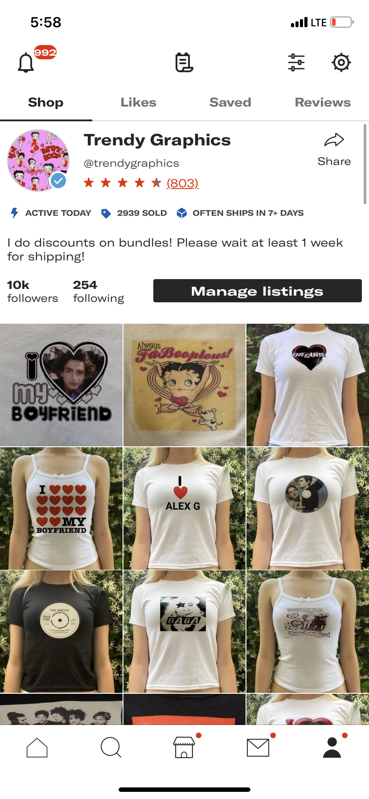
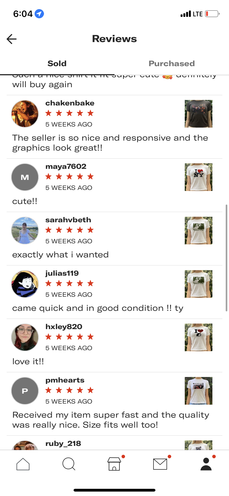
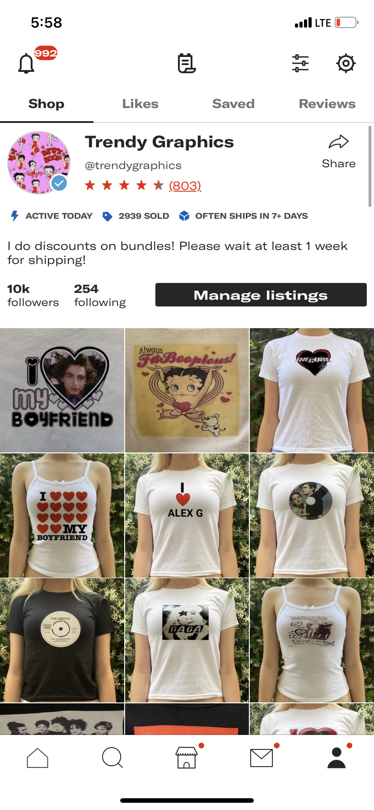
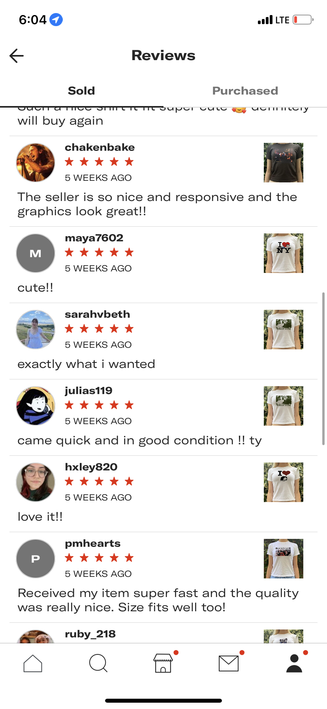

Emilia Nivinskus
Currently, I am a first-year student attending the University of California, Riverside. I am from Yorba Linda in Orange County, I attended Yorba Linda High School for all four years of my high school career. Throughout high school, I have taken many accelerated courses and AP classes as well as regular classes. I was involved in the future business leaders of America club, where I learned the fundamentals of business such as business ethics, vocabulary, communication, marketing, and management skills. I also was a part of the National Honors Society in my later high school years. I was a part of the Human Unchanged club which raised awareness against human trafficking victims. I also participated in athletics in High School such as running track and field and dance classes. Starting my sophomore year of high school I have been running a small business on an app called Depop. Depop is an extremely popular app among my generation, Depop is an app designed for selling second-hand and handmade clothing. I have been selling handmade graphics on Depop for around 3 years. Throughout my Depop experience, I have gained the title of a Depop top seller. Many influential people have purchased items from my shops which is something I am very proud of. I have dealt with many experiences with customer service, marketing, and managing my business. I plan to continue to run and expand my business throughout college.
At the University of California riverside, I am majoring in pre-business and I plan to concentrate on business administration or marketing. So far I have been enjoying my classes and my college experience. My classes have been challenging yet doable. I am eager to continue to progress further into my education and take upper division business classes. I plan on graduating in 4 years with a degree from UC riverside and then continuing to achieve my masters in business administration in 2 years. I hope to receive my masters from a school in Europe in order to gain a more worldly view of business and the world around me. I plan on joining clubs and attending activities outside of classes in order to gain more knowledge and experiences as well as gain connections since this is crucial for my future in the world of business.
I decided to major in business since I believe that it will set me up for a solid future. With a degree in business I will be able to enter almost any field of work. Since I am not one hundred percent sure on what field of work I want to pursue, having a business degree is a perfect option for me. I have always been business minded and have had an entrepreneurial mindset and spirit. I am extremely hardworking and determined, I have excellent communication skills with my peers and those around me. All these qualities make me a perfect candidate for any job in the business world. Overall, I am eager to enter the workforce and demonstrate my skill that I have worked hard to develop throughout my childhood and teenage years.
Experience
depop top seller
• Started a small business on depop
• worked with marketing products
• dealt with customer service issues
babysitting
• Responsible for looking after children
• cooking food
• cleaning up after children
Education
UC Riverside
Portfolio




 